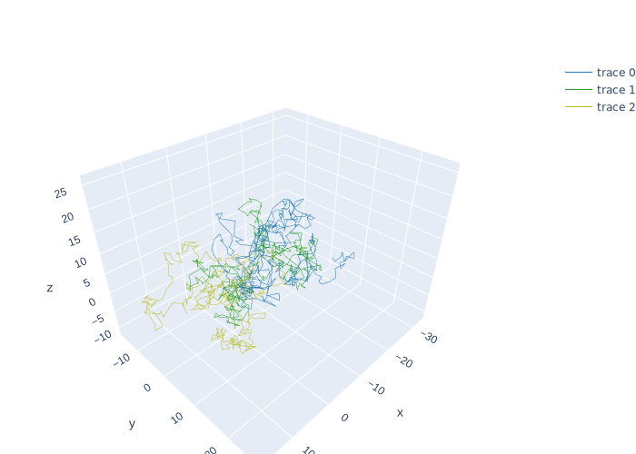
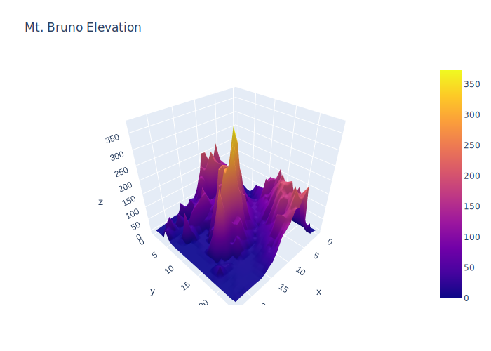
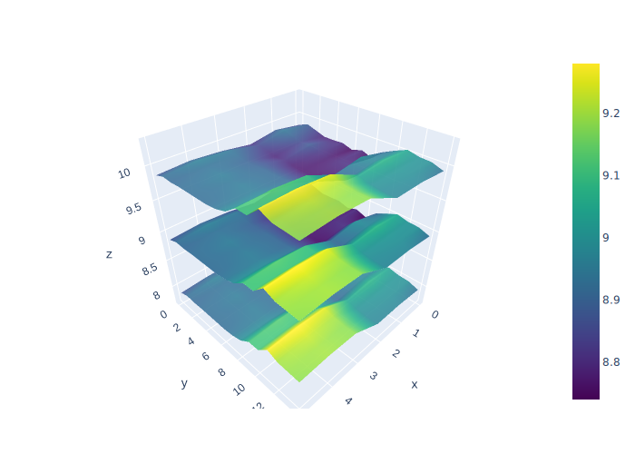
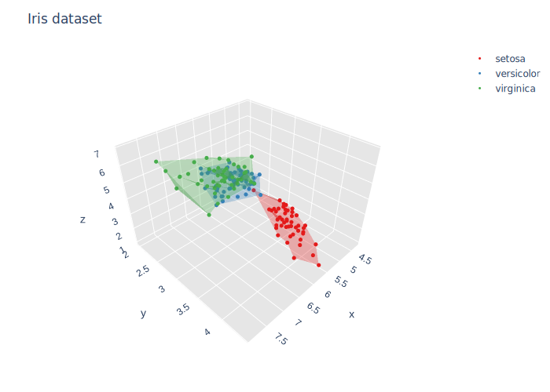
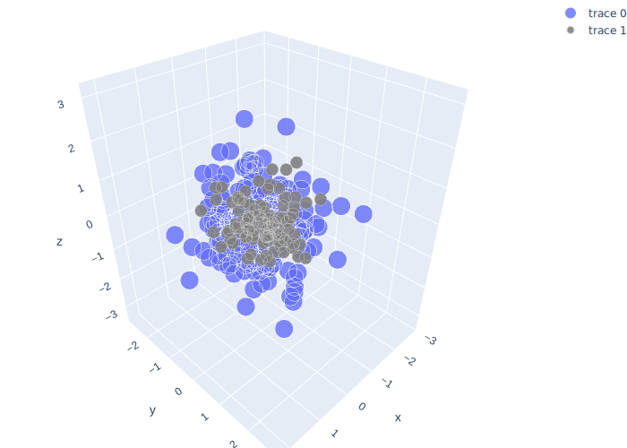

using PlotlyJS, DataFrames, RDatasets, Colors, Distributions, LinearAlgebra
function random_line()
n = 400
rw() = cumsum(randn(n))
trace1 = scatter3d(;x=rw(),y=rw(), z=rw(), mode="lines",
marker=attr(color="#1f77b4", size=12, symbol="circle",
line=attr(color="rgb(0,0,0)", width=0)),
line=attr(color="#1f77b4", width=1))
trace2 = scatter3d(;x=rw(),y=rw(), z=rw(), mode="lines",
marker=attr(color="#9467bd", size=12, symbol="circle",
line=attr(color="rgb(0,0,0)", width=0)),
line=attr(color="rgb(44, 160, 44)", width=1))
trace3 = scatter3d(;x=rw(),y=rw(), z=rw(), mode="lines",
marker=attr(color="#bcbd22", size=12, symbol="circle",
line=attr(color="rgb(0,0,0)", width=0)),
line=attr(color="#bcbd22", width=1))
layout = Layout(autosize=false, width=500, height=500,
margin=attr(l=0, r=0, b=0, t=65))
plot([trace1, trace2, trace3], layout)
end
random_line()
function topo_surface()
z = Vector[[27.80985, 49.61936, 83.08067, 116.6632, 130.414, 150.7206, 220.1871,
156.1536, 148.6416, 203.7845, 206.0386, 107.1618, 68.36975, 45.3359,
49.96142, 21.89279, 17.02552, 11.74317, 14.75226, 13.6671, 5.677561,
3.31234, 1.156517, -0.147662],
[27.71966, 48.55022, 65.21374, 95.27666, 116.9964, 133.9056, 152.3412,
151.934, 160.1139, 179.5327, 147.6184, 170.3943, 121.8194, 52.58537,
33.08871, 38.40972, 44.24843, 69.5786, 4.019351, 3.050024, 3.039719,
2.996142, 2.967954, 1.999594],
[30.4267, 33.47752, 44.80953, 62.47495, 77.43523, 104.2153, 102.7393, 137.0004,
186.0706, 219.3173, 181.7615, 120.9154, 143.1835, 82.40501, 48.47132,
74.71461, 60.0909, 7.073525, 6.089851, 6.53745, 6.666096, 7.306965, 5.73684,
3.625628],
[16.66549, 30.1086, 39.96952, 44.12225, 59.57512, 77.56929, 106.8925,
166.5539, 175.2381, 185.2815, 154.5056, 83.0433, 62.61732, 62.33167,
60.55916, 55.92124, 15.17284, 8.248324, 36.68087, 61.93413, 20.26867,
68.58819, 46.49812, 0.2360095],
[8.815617, 18.3516, 8.658275, 27.5859, 48.62691, 60.18013, 91.3286,
145.7109, 116.0653, 106.2662, 68.69447, 53.10596, 37.92797, 47.95942,
47.42691, 69.20731, 44.95468, 29.17197, 17.91674, 16.25515, 14.65559,
17.26048, 31.22245, 46.71704],
[6.628881, 10.41339, 24.81939, 26.08952, 30.1605, 52.30802, 64.71007,
76.30823, 84.63686, 99.4324, 62.52132, 46.81647, 55.76606, 82.4099,
140.2647, 81.26501, 56.45756, 30.42164, 17.28782, 8.302431, 2.981626,
2.698536, 5.886086, 5.268358],
[21.83975, 6.63927, 18.97085, 32.89204, 43.15014, 62.86014, 104.6657,
130.2294, 114.8494, 106.9873, 61.89647, 55.55682, 86.80986, 89.27802,
122.4221, 123.9698, 109.0952, 98.41956, 77.61374, 32.49031, 14.67344,
7.370775, 0.03711011, 0.6423392],
[53.34303, 26.79797, 6.63927, 10.88787, 17.2044, 56.18116, 79.70141,
90.8453, 98.27675, 80.87243, 74.7931, 75.54661, 73.4373, 74.11694, 68.1749,
46.24076, 39.93857, 31.21653, 36.88335, 40.02525, 117.4297, 12.70328,
1.729771, 0],
[25.66785, 63.05717, 22.1414, 17.074, 41.74483, 60.27227, 81.42432, 114.444,
102.3234, 101.7878, 111.031, 119.2309, 114.0777, 110.5296, 59.19355,
42.47175, 14.63598, 6.944074, 6.944075, 27.74936, 0, 0, 0.09449376, 0.07732264],
[12.827, 69.20554, 46.76293, 13.96517, 33.88744, 61.82613, 84.74799,
121.122, 145.2741, 153.1797, 204.786, 227.9242, 236.3038, 228.3655,
79.34425, 25.93483, 6.944074, 6.944074, 6.944075, 7.553681, 0, 0, 0, 0],
[0, 68.66396, 59.0435, 33.35762, 47.45282, 57.8355, 78.91689, 107.8275,
168.0053, 130.9597, 212.5541, 165.8122, 210.2429, 181.1713, 189.7617,
137.3378, 84.65395, 8.677168, 6.956576, 8.468093, 0, 0, 0, 0],
[0, 95.17499, 80.03818, 59.89862, 39.58476, 50.28058, 63.81641, 80.61302,
66.37824, 198.7651, 244.3467, 294.2474, 264.3517, 176.4082, 60.21857,
77.41475, 53.16981, 56.16393, 6.949235, 7.531059, 3.780177, 0, 0, 0],
[0, 134.9879, 130.3696, 96.86325, 75.70494, 58.86466, 57.20374, 55.18837,
78.128, 108.5582, 154.3774, 319.1686, 372.8826, 275.4655, 130.2632, 54.93822,
25.49719, 8.047439, 8.084393, 5.115252, 5.678269, 0, 0, 0],
[0, 48.08919, 142.5558, 140.3777, 154.7261, 87.9361, 58.11092, 52.83869,
67.14822, 83.66798, 118.9242, 150.0681, 272.9709, 341.1366, 238.664, 190.2,
116.8943, 91.48672, 14.0157, 42.29277, 5.115252, 0, 0, 0],
[0, 54.1941, 146.3839, 99.48143, 96.19411, 102.9473, 76.14089, 57.7844,
47.0402, 64.36799, 84.23767, 162.7181, 121.3275, 213.1646, 328.482,
285.4489, 283.8319, 212.815, 164.549, 92.29631, 7.244015, 1.167, 0, 0],
[0, 6.919659, 195.1709, 132.5253, 135.2341, 89.85069, 89.45549, 60.29967,
50.33806, 39.17583, 59.06854, 74.52159, 84.93402, 187.1219, 123.9673,
103.7027, 128.986, 165.1283, 249.7054, 95.39966, 10.00284, 2.39255, 0, 0],
[0, 21.73871, 123.1339, 176.7414, 158.2698, 137.235, 105.3089, 86.63255, 53.11591,
29.03865, 30.40539, 39.04902, 49.23405, 63.27853, 111.4215, 101.1956,
40.00962, 59.84565, 74.51253, 17.06316, 2.435141, 2.287471, -0.0003636982, 0],
[0, 0, 62.04672, 136.3122, 201.7952, 168.1343, 95.2046, 58.90624, 46.94091,
49.27053, 37.10416, 17.97011, 30.93697, 33.39257, 44.03077, 55.64542,
78.22423, 14.42782, 9.954997, 7.768213, 13.0254, 21.73166, 2.156372,
0.5317867],
[0, 0, 79.62993, 139.6978, 173.167, 192.8718, 196.3499, 144.6611, 106.5424,
57.16653, 41.16107, 32.12764, 13.8566, 10.91772, 12.07177, 22.38254,
24.72105, 6.803666, 4.200841, 16.46857, 15.70744, 33.96221, 7.575688,
-0.04880907],
[0, 0, 33.2664, 57.53643, 167.2241, 196.4833, 194.7966, 182.1884, 119.6961,
73.02113, 48.36549, 33.74652, 26.2379, 16.3578, 6.811293, 6.63927, 6.639271,
8.468093, 6.194273, 3.591233, 3.81486, 8.600739, 5.21889, 0],
[0, 0, 29.77937, 54.97282, 144.7995, 207.4904, 165.3432, 171.4047, 174.9216,
100.2733, 61.46441, 50.19171, 26.08209, 17.18218, 8.468093, 6.63927,
6.334467, 6.334467, 5.666687, 4.272203, 0, 0, 0, 0],
[0, 0, 31.409, 132.7418, 185.5796, 121.8299, 185.3841, 160.6566, 116.1478,
118.1078, 141.7946, 65.56351, 48.84066, 23.13864, 18.12932, 10.28531,
6.029663, 6.044627, 5.694764, 3.739085, 3.896037, 0, 0, 0],
[0, 0, 19.58994, 42.30355, 96.26777, 187.1207, 179.6626, 221.3898, 154.2617,
142.1604, 148.5737, 67.17937, 40.69044, 39.74512, 26.10166, 14.48469,
8.65873, 3.896037, 3.571392, 3.896037, 3.896037, 3.896037, 1.077756, 0],
[0.001229679, 3.008948, 5.909858, 33.50574, 104.3341, 152.2165, 198.1988,
191.841, 228.7349, 168.1041, 144.2759, 110.7436, 57.65214, 42.63504,
27.91891, 15.41052, 8.056102, 3.90283, 3.879774, 3.936718, 3.968634,
0.1236256, 3.985531, -0.1835741],
[0, 5.626141, 7.676256, 63.16226, 45.99762, 79.56688, 227.311, 203.9287,
172.5618, 177.1462, 140.4554, 123.9905, 110.346, 65.12319, 34.31887,
24.5278, 9.561069, 3.334991, 5.590495, 5.487353, 5.909499, 5.868994,
5.833817, 3.568177]]
trace = surface(z=z)
layout = Layout(title="Mt. Bruno Elevation", autosize=false, width=500,
height=500, margin=attr(l=65, r=50, b=65, t=90))
plot(trace, layout)
end
topo_surface()
function multiple_surface()
z1 = Vector[[8.83, 8.89, 8.81, 8.87, 8.9, 8.87],
[8.89, 8.94, 8.85, 8.94, 8.96, 8.92],
[8.84, 8.9, 8.82, 8.92, 8.93, 8.91],
[8.79, 8.85, 8.79, 8.9, 8.94, 8.92],
[8.79, 8.88, 8.81, 8.9, 8.95, 8.92],
[8.8, 8.82, 8.78, 8.91, 8.94, 8.92],
[8.75, 8.78, 8.77, 8.91, 8.95, 8.92],
[8.8, 8.8, 8.77, 8.91, 8.95, 8.94],
[8.74, 8.81, 8.76, 8.93, 8.98, 8.99],
[8.89, 8.99, 8.92, 9.1, 9.13, 9.11],
[8.97, 8.97, 8.91, 9.09, 9.11, 9.11],
[9.04, 9.08, 9.05, 9.25, 9.28, 9.27],
[9, 9.01, 9, 9.2, 9.23, 9.2],
[8.99, 8.99, 8.98, 9.18, 9.2, 9.19],
[8.93, 8.97, 8.97, 9.18, 9.2, 9.18]]
z2 = map(x -> x .+ 1, z1)
z3 = map(x -> x .- 1, z1)
trace1 = surface(z=z1, colorscale="Viridis")
trace2 = surface(z=z2, showscale=false, opacity=0.9, colorscale="Viridis")
trace3 = surface(z=z3, showscale=false, opacity=0.9, colorscale="Viridis")
plot([trace1, trace2, trace3])
end
multiple_surface()
function clustering_alpha_shapes()
# load data
iris = RDatasets.dataset("datasets", "iris")
nms = unique(iris.Species)
colors = [RGB(0.89, 0.1, 0.1), RGB(0.21, 0.50, 0.72), RGB(0.28, 0.68, 0.3)]
data = GenericTrace[]
for (i, nm) in enumerate(nms)
df = iris[iris[!, :Species] .== nm, :]
x = df[!, :SepalLength]
y = df[!, :SepalWidth]
z = df[!, :PetalLength]
trace = scatter3d(;name=nm, mode="markers",
marker_size=3, marker_color=colors[i], marker_line_width=0,
x=x, y=y, z=z)
push!(data, trace)
cluster = mesh3d(;color=colors[i], opacity=0.3, x=x, y=y, z=z)
push!(data, cluster)
end
# notice the nested attrs to create complex JSON objects
layout = Layout(width=800, height=550, autosize=false, title="Iris dataset",
scene=attr(xaxis=attr(gridcolor="rgb(255, 255, 255)",
zerolinecolor="rgb(255, 255, 255)",
showbackground=true,
backgroundcolor="rgb(230, 230,230)"),
yaxis=attr(gridcolor="rgb(255, 255, 255)",
zerolinecolor="rgb(255, 255, 255)",
showbackground=true,
backgroundcolor="rgb(230, 230,230)"),
zaxis=attr(gridcolor="rgb(255, 255, 255)",
zerolinecolor="rgb(255, 255, 255)",
showbackground=true,
backgroundcolor="rgb(230, 230,230)"),
aspectratio=attr(x=1, y=1, z=0.7),
aspectmode="manual"))
plot(data, layout)
end
clustering_alpha_shapes()
function scatter_3d()
Σ = fill(0.5, 3, 3) + Diagonal([0.5, 0.5, 0.5])
obs1 = rand(MvNormal(zeros(3), Σ), 200)'
obs2 = rand(MvNormal(zeros(3), 0.5Σ), 100)'
trace1 = scatter3d(;x=obs1[:, 1], y=obs1[:, 2], z=obs1[:, 3],
mode="markers", opacity=0.8,
marker_size=12, marker_line_width=0.5,
marker_line_color="rgba(217, 217, 217, 0.14)")
trace2 = scatter3d(;x=obs2[:, 1], y=obs2[:, 2], z=obs2[:, 3],
mode="markers", opacity=0.9,
marker=attr(color="rgb(127, 127, 127)",
symbol="circle", line_width=1.0,
line_color="rgb(204, 204, 204)"))
layout = Layout(margin=attr(l=0, r=0, t=0, b=0))
plot([trace1, trace2], layout)
end
scatter_3d()
function trisurf()
facecolor = repeat([
"rgb(50, 200, 200)",
"rgb(100, 200, 255)",
"rgb(150, 200, 115)",
"rgb(200, 200, 50)",
"rgb(230, 200, 10)",
"rgb(255, 140, 0)"
], inner=[2])
t = mesh3d(
x=[0, 0, 1, 1, 0, 0, 1, 1],
y=[0, 1, 1, 0, 0, 1, 1, 0],
z=[0, 0, 0, 0, 1, 1, 1, 1],
i=[7, 0, 0, 0, 4, 4, 2, 6, 4, 0, 3, 7],
j=[3, 4, 1, 2, 5, 6, 5, 5, 0, 1, 2, 2],
k=[0, 7, 2, 3, 6, 7, 1, 2, 5, 5, 7, 6],
facecolor=facecolor)
plot(t)
end
trisurf()
function meshcube()
t = mesh3d(
x=[0, 0, 1, 1, 0, 0, 1, 1],
y=[0, 1, 1, 0, 0, 1, 1, 0],
z=[0, 0, 0, 0, 1, 1, 1, 1],
i=[7, 0, 0, 0, 4, 4, 6, 6, 4, 0, 3, 2],
j=[3, 4, 1, 2, 5, 6, 5, 2, 0, 1, 6, 3],
k=[0, 7, 2, 3, 6, 7, 1, 1, 5, 5, 7, 6],
intensity=range(0, stop=1, length=8),
colorscale=[
[0, "rgb(255, 0, 255)"],
[0.5, "rgb(0, 255, 0)"],
[1, "rgb(0, 0, 255)"]
]
)
plot(t)
end
meshcube()